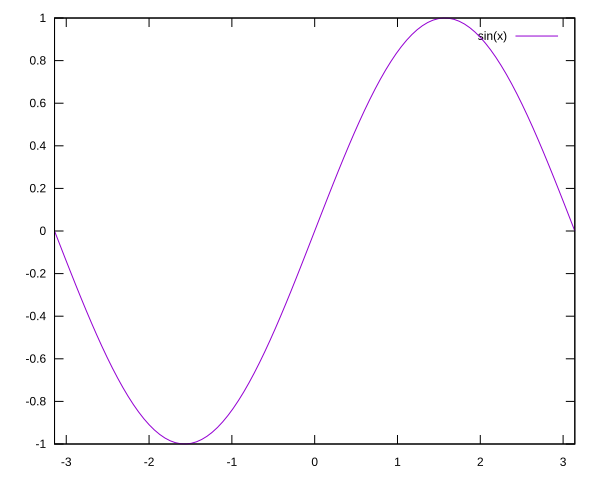
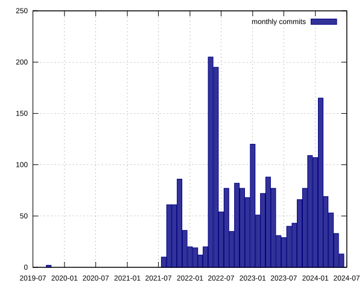

inline gnuplot
June 22, 2024
Time to time I find myself needing to plot histograms and approximations
in occasional posts.
Similar to inline graphviz
support today I added gnuplot svg inlining support into this blog.
The trivial example looks this way:

The above is generated using the following .md snippet:
```{render=gnuplot}
plot [-pi:pi] sin(x)
```
hakyll integration
is also straightforward:
inlineGnuplot :: TP.Block -> Compiler TP.Block
inlineGnuplot cb@(TP.CodeBlock (id, classes, namevals) contents)
| ("render", "gnuplot") `elem` namevals
= TP.RawBlock (TP.Format "html") . DT.pack <$> (
unixFilter "gnuplot"
[ "--default-settings"
, "-e", "set terminal svg"
, "-"]
(DT.unpack contents))
inlineGnuplot x = return x
Here we call gnuplot --default-settings -e "set terminal svg" - and
pass our script over stdin. Easy!
For those who wonder what gnuplot is capable of have a look at
gnuplot.info demo page.
As a bonus here is the time chart of my commits into nixpkgs:

Have fun!